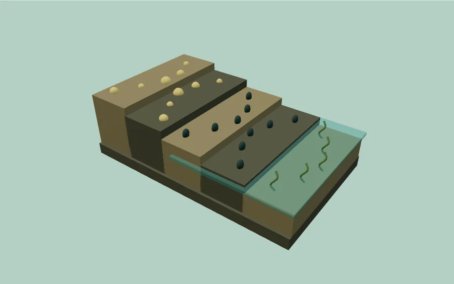

Digital field guide
Betweentwo tides
Explore an illustrated shore from the spray line down to the lower pools.
Change the waterlineThe shore in bands
Waves and tides expose each band for a different length of time. The species here are examples from temperate rocky coasts.
Lichen and periwinkles
Splash from breaking waves moistens the rock above the usual high-water line.
Tide interpolation
Use consecutive low and high tides to estimate when the water reaches a chosen fraction of the rise. This is a mathematical sketch.
3D model
Rocky shore habitats
